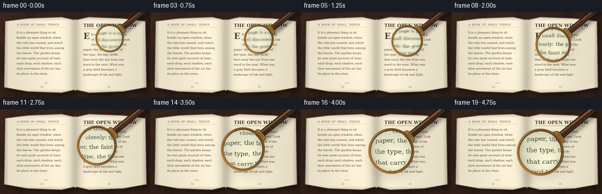
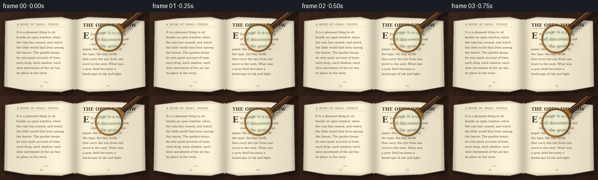

CODING AGENTS AS PIXEL WORLD MODELS
traex/DeepSeek-V4.1-Flash · phygen_066
点击播放 · 原生 RGB 像素
逐轮保存的候选
回放视频、检查图与代码变化。
每份候选均可单独播放。实际图片检查记录在下方工具轨迹中。
候选 01播放与检查图
点击播放 · 原生 RGB 像素

展开代码变化
--- 上一保存版本
+++ 本次保存版本
@@ -0,0 +1,488 @@
+from pathlib import Path
+import math
+
+import cv2
+import numpy as np
+from PIL import Image, ImageDraw, ImageFont
+
+import artifact_io
+
+
+CASE_DIR = Path(__file__).resolve().parent
+WIDTH = 256
+HEIGHT = 144
+FRAMES = 20
+FPS = 4.0
+
+# Supersampling keeps the fine type and metal highlights crisp after downscale.
+S = 4
+W = WIDTH * S
+H = HEIGHT * S
+
+FONT_REGULAR = "/usr/share/fonts/truetype/dejavu/DejaVuSerif.ttf"
+FONT_ITALIC = "/usr/share/fonts/truetype/dejavu/DejaVuSerif-Italic.ttf"
+FONT_BOLD = "/usr/share/fonts/truetype/dejavu/DejaVuSerif-Bold.ttf"
+
+
+def smoothstep(t):
+ t = np.clip(t, 0.0, 1.0)
+ return t * t * (3.0 - 2.0 * t)
+
+
+def mix(a, b, t):
+ return a * (1.0 - t) + b * t
+
+
+def soft_noise(rng, shape, blur):
+ small = rng.normal(0.0, 1.0, shape).astype(np.float32)
+ return cv2.GaussianBlur(small, (0, 0), blur, borderType=cv2.BORDER_REFLECT)
+
+
+def make_desk():
+ rng = np.random.default_rng(19)
+ yy, xx = np.mgrid[0:H, 0:W].astype(np.float32)
+ base = np.empty((H, W, 3), np.float32)
+ grain = (
+ 0.48 * np.sin(xx * 0.021 + np.sin(yy * 0.015) * 2.4)
+ + 0.28 * np.sin(xx * 0.053 + yy * 0.006)
+ + 0.15 * np.sin(xx * 0.122 + yy * 0.021)
+ )
+ broad = cv2.GaussianBlur(rng.normal(0.0, 1.0, (H, W)).astype(np.float32), (0, 0), 34)
+ base[..., 0] = 50 + 7 * grain + 3.5 * broad
+ base[..., 1] = 32 + 4.8 * grain + 2.2 * broad
+ base[..., 2] = 24 + 3.2 * grain + 1.4 * broad
+
+ # Warm pool of light from the upper left.
+ light = 1.12 - 0.18 * np.sqrt(((xx - W * 0.18) / W) ** 2 + ((yy - H * 0.12) / H) ** 2)
+ return np.clip(base * light[..., None], 0, 255)
+
+
+def page_geometry():
+ mask = np.zeros((H, W), np.uint8)
+ polygon = np.array(
+ [
+ [37, 62],
+ [191, 43],
+ [420, 34],
+ [505, 53],
+ [512, 48],
+ [519, 53],
+ [604, 34],
+ [833, 43],
+ [987, 62],
+ [994, 508],
+ [838, 536],
+ [606, 545],
+ [520, 525],
+ [512, 532],
+ [504, 525],
+ [418, 545],
+ [186, 536],
+ [30, 508],
+ ],
+ np.int32,
+ )
+ cv2.fillPoly(mask, [polygon], 255)
+ return mask, polygon
+
+
+def make_book():
+ rng = np.random.default_rng(441)
+ desk = make_desk()
+ mask, polygon = page_geometry()
+
+ # The page block and cover sit slightly above the desk.
+ page_shadow = np.zeros((H, W), np.uint8)
+ shifted = polygon.copy()
+ shifted[:, 0] += 10
+ shifted[:, 1] += 15
+ cv2.fillPoly(page_shadow, [shifted], 255)
+ page_shadow = cv2.GaussianBlur(page_shadow, (0, 0), 17).astype(np.float32) / 255.0
+ scene = desk * (1.0 - 0.52 * page_shadow[..., None])
+
+ yy, xx = np.mgrid[0:H, 0:W].astype(np.float32)
+ low = soft_noise(rng, (H // 8, W // 8), 5.0)
+ low = cv2.resize(low, (W, H), interpolation=cv2.INTER_CUBIC)
+ fiber = soft_noise(rng, (H // 2, W // 2), 0.9)
+ fiber = cv2.resize(fiber, (W, H), interpolation=cv2.INTER_LINEAR)
+ grain = rng.normal(0.0, 1.0, (H, W)).astype(np.float32)
+
+ # Ivory stock with gentle age mottling and visible paper fibers.
+ paper = np.empty((H, W, 3), np.float32)
+ tone = 0.972 + 0.018 * low + 0.008 * fiber + 0.0045 * grain
+ paper[..., 0] = 239.0 * tone
+ paper[..., 1] = 229.0 * tone
+ paper[..., 2] = 204.0 * tone
+
+ # Open-book curvature: darker toward the gutter, with soft outer-edge wear.
+ gutter = np.exp(-((xx - W * 0.5) / (W * 0.030)) ** 2)
+ inner_shadow = np.exp(-((np.abs(xx - W * 0.5) - W * 0.018) / (W * 0.050)) ** 2)
+ page_curve = 0.055 * np.cos((xx - W * 0.5) / W * math.pi * 2.0)
+ edge_x = np.minimum(np.maximum(xx - 35, 0), np.maximum(990 - xx, 0))
+ edge_y = np.minimum(np.maximum(yy - 35, 0), np.maximum(545 - yy, 0))
+ edge = np.clip(np.minimum(edge_x, edge_y) / 24.0, 0, 1)
+
+ illum = (
+ 1.035
+ - 0.17 * gutter
+ - 0.075 * inner_shadow
+ + page_curve
+ + 0.020 * (1.0 - xx / W)
+ + 0.014 * (1.0 - yy / H)
+ )
+ illum *= 0.83 + 0.17 * edge
+ paper *= illum[..., None]
+
+ alpha = mask.astype(np.float32)[..., None] / 255.0
+ scene = scene * (1.0 - alpha) + paper * alpha
+
+ # A slim page-edge highlight makes the volume legible against the dark desk.
+ edge_line = cv2.polylines(
+ np.zeros((H, W), np.uint8), [polygon], True, 255, 7, lineType=cv2.LINE_AA
+ )
+ edge_line = cv2.GaussianBlur(edge_line, (0, 0), 1.2).astype(np.float32) / 255.0
+ scene = scene * (1.0 - 0.28 * edge_line[..., None]) + np.array([230, 220, 190]) * (
+ 0.28 * edge_line[..., None]
+ )
+
+ return np.clip(scene, 0, 255)
+
+
+def text_layer():
+ layer = Image.new("RGBA", (W, H), (0, 0, 0, 0))
+ draw = ImageDraw.Draw(layer)
+ ink = (47, 38, 30, 246)
+ faded_ink = (70, 57, 44, 212)
+ body = ImageFont.truetype(FONT_REGULAR, 20)
+ italic = ImageFont.truetype(FONT_ITALIC, 18)
+ bold = ImageFont.truetype(FONT_BOLD, 27)
+ title = ImageFont.truetype(FONT_BOLD, 31)
+ drop = ImageFont.truetype(FONT_BOLD, 57)
+ number = ImageFont.truetype(FONT_REGULAR, 16)
+
+ left_lines = [
+ "It is a pleasant thing to sit",
+ "beside an open window, when",
+ "the rain has ceased, and watch",
+ "the little world that lives among",
+ "the leaves. The garden keeps",
+ "its own quiet account of time;",
+ "each drop, each shadow, each",
+ "slow movement of the air has",
+ "its place in the story.",
+ ]
+ right_lines = [
+ "Every page is a country",
+ "of small discoveries. Look",
+ "closely: the grain of the",
+ "paper, the faint impress of",
+ "the type, the tiny serifs",
+ "that carry the eye from one",
+ "word to the next. What was",
+ "a grey field becomes a",
+ "landscape of ink and light.",
+ ]
+
+ # Left page running head, folio, and body.
+ draw.text((115, 73), "A BOOK OF SMALL THINGS", font=italic, fill=faded_ink)
+ draw.line((115, 101, 451, 101), fill=(91, 73, 52, 125), width=1)
+ y = 125
+ for line in left_lines:
+ draw.text((113, y), line, font=body, fill=ink)
+ y += 35
+ draw.text((274, 498), "12", font=number, fill=faded_ink)
+
+ # Right page: title, rule, drop cap, and justified-looking body.
+ draw.text((567, 70), "THE OPEN WINDOW", font=title, fill=(43, 34, 27, 249))
+ draw.line((567, 111, 906, 111), fill=(96, 72, 48, 160), width=2)
+ draw.text((568, 127), "E", font=drop, fill=(42, 34, 27, 249))
+ y = 139
+ for index, line in enumerate(right_lines):
+ x = 621 if index < 3 else 566
+ draw.text((x, y), line, font=body, fill=ink)
+ y += 34
+ draw.text((731, 498), "13", font=number, fill=faded_ink)
+
+ # Tiny ornamental rule and old-book page wear.
+ draw.line((298, 480, 329, 480), fill=(103, 80, 55, 145), width=2)
+ draw.ellipse((311, 477, 315, 481), fill=(103, 80, 55, 145))
+
+ # The ink is a little uneven, as if pressed into fibrous stock.
+ arr = np.asarray(layer, np.float32)
+ alpha = arr[..., 3:4] / 255.0
+ rng = np.random.default_rng(93)
+ ink_var = cv2.GaussianBlur(rng.normal(0.0, 1.0, (H, W)).astype(np.float32), (0, 0), 1.1)
+ alpha = np.clip(alpha * (0.91 + 0.055 * ink_var[..., None]), 0, 1)
+ rgb = np.array([47, 38, 30], np.float32)
+ return rgb, alpha
+
+
+def add_text(book):
+ ink_rgb, ink_alpha = text_layer()
+ out = book * (1.0 - ink_alpha) + ink_rgb * ink_alpha
+ return np.clip(out, 0, 255)
+
+
+def lens_state(frame_index):
+ raw = frame_index / (FRAMES - 1)
+ t = smoothstep(raw)
+ center = np.array([mix(746.0, 604.0, t), mix(175.0, 291.0, t)], np.float32)
+ radius = mix(91.0, 151.0, t)
+ magnification = mix(1.42, 2.38, t)
+ return center, radius, magnification, t
+
+
+def handle_geometry(center, radius):
+ theta = math.radians(-39.0)
+ direction = np.array([math.cos(theta), math.sin(theta)], np.float32)
+ start = center + direction * (radius - 1.0)
+ end = center + direction * (radius + mix(232.0, 310.0, (radius - 91.0) / 60.0))
+ width = mix(29.0, 39.0, (radius - 91.0) / 60.0)
+ return start, end, direction, width
+
+
+def draw_handle(scene, center, radius, t):
+ start, end, direction, width = handle_geometry(center, radius)
+ perpendicular = np.array([-direction[1], direction[0]], np.float32)
+
+ # Soft contact shadow under the wooden handle.
+ shadow = np.zeros((H, W), np.uint8)
+ offset = np.array([17.0, 23.0], np.float32)
+ p1 = tuple(np.round(start + offset).astype(int))
+ p2 = tuple(np.round(end + offset).astype(int))
+ cv2.line(shadow, p1, p2, 255, int(width + 11), cv2.LINE_AA)
+ cv2.circle(shadow, p1, int((width + 11) // 2), 255, -1, cv2.LINE_AA)
+ cv2.circle(shadow, p2, int((width + 11) // 2), 255, -1, cv2.LINE_AA)
+ shadow = cv2.GaussianBlur(shadow, (0, 0), 10.0 + 3.0 * t).astype(np.float32) / 255.0
+ scene *= 1.0 - 0.36 * shadow[..., None]
+
+ # Dark lacquered edge and rounded end.
+ p1 = tuple(np.round(start).astype(int))
+ p2 = tuple(np.round(end).astype(int))
+ cv2.line(scene, p1, p2, (26, 19, 15), int(width + 8), cv2.LINE_AA)
+ cv2.circle(scene, p1, int((width + 8) / 2), (26, 19, 15), -1, cv2.LINE_AA)
+ cv2.circle(scene, p2, int((width + 8) / 2), (26, 19, 15), -1, cv2.LINE_AA)
+
+ # Segment the handle so its grain and lighting follow the barrel.
+ steps = 20
+ for i in range(steps):
+ a = i / steps
+ b = (i + 1) / steps
+ qa = start + (end - start) * a
+ qb = start + (end - start) * b
+ shade = 0.80 + 0.19 * math.sin(math.pi * a) + 0.04 * math.sin(i * 2.1)
+ color = (
+ int(79 * shade),
+ int(50 * shade),
+ int(31 * shade),
+ )
+ cv2.line(
+ scene,
+ tuple(np.round(qa).astype(int)),
+ tuple(np.round(qb).astype(int)),
+ color,
+ int(width),
+ cv2.LINE_AA,
+ )
+ cv2.circle(scene, p1, int(width / 2), (79, 50, 31), -1, cv2.LINE_AA)
+ cv2.circle(scene, p2, int(width / 2), (61, 39, 25), -1, cv2.LINE_AA)
+
+ # Fine wood grain, warm edge light, and a narrow central varnish streak.
+ for k in [-0.34, -0.20, 0.04, 0.18, 0.31]:
+ q1 = start + perpendicular * (width * k)
+ q2 = end + perpendicular * (width * k * 0.72)
+ shade = 105 if k < 0 else 55
+ cv2.line(
+ scene,
+ tuple(np.round(q1).astype(int)),
+ tuple(np.round(q2).astype(int)),
+ (shade, int(shade * 0.67), int(shade * 0.42)),
+ max(1, int(width * 0.055)),
+ cv2.LINE_AA,
+ )
+ h1 = start + perpendicular * (-width * 0.37)
+ h2 = end + perpendicular * (-width * 0.25)
+ cv2.line(
+ scene,
+ tuple(np.round(h1).astype(int)),
+ tuple(np.round(h2).astype(int)),
+ (157, 112, 68),
+ max(2, int(width * 0.09)),
+ cv2.LINE_AA,
+ )
+
+ # Brass ferrule where the handle meets the frame.
+ ferrule_center = start + direction * 12.0
+ f1 = ferrule_center - perpendicular * (width * 0.63)
+ f2 = ferrule_center + perpendicular * (width * 0.63)
+ cv2.line(
+ scene,
+ tuple(np.round(f1).astype(int)),
+ tuple(np.round(f2).astype(int)),
+ (50, 37, 20),
+ int(width + 6),
+ cv2.LINE_AA,
+ )
+ cv2.line(
+ scene,
+ tuple(np.round(f1).astype(int)),
+ tuple(np.round(f2).astype(int)),
+ (164, 118, 52),
+ int(width + 1),
+ cv2.LINE_AA,
+ )
+ for band in [-8.0, 8.0]:
+ c = ferrule_center + direction * band
+ b1 = c - perpendicular * (width * 0.59)
+ b2 = c + perpendicular * (width * 0.59)
+ cv2.line(
+ scene,
+ tuple(np.round(b1).astype(int)),
+ tuple(np.round(b2).astype(int)),
+ (92, 66, 31),
+ max(1, int(width * 0.08)),
+ cv2.LINE_AA,
+ )
+
+ return scene
+
+
+def remap_glass(book, center, radius, magnification, t):
+ yy, xx = np.mgrid[0:H, 0:W].astype(np.float32)
+ dx = xx - center[0]
+ dy = yy - center[1]
+ rr = np.sqrt(dx * dx + dy * dy)
+ inner_radius = radius - mix(7.0, 11.0, t)
+ inside = rr < inner_radius
+
+ rnorm = np.clip(rr / max(inner_radius, 1.0), 0, 1)
+ # A small amount of barrel distortion plus a slight oblique shift reads as glass.
+ bend = 1.0 + 0.13 * rnorm**3
+ sx = center[0] + dx * bend / magnification + mix(1.8, 3.2, t)
+ sy = center[1] + dy * bend / magnification + mix(1.2, 2.1, t)
+
+ # Sample channels at slightly different scales for restrained chromatic fringing.
+ scale = np.array([0.997, 1.0, 1.004], np.float32)
+ channels = []
+ for channel, chroma in enumerate(scale):
+ mx = center[0] + (sx - center[0]) * chroma
+ my = center[1] + (sy - center[1]) * chroma
+ sampled = cv2.remap(
+ book[..., channel],
+ mx.astype(np.float32),
+ my.astype(np.float32),
+ cv2.INTER_CUBIC,
+ borderMode=cv2.BORDER_REFLECT,
+ )
+ channels.append(sampled)
+ glass = np.stack(channels, axis=-1)
+
+ # The page snaps into focus as the lens descends.
+ blur_amount = 3.4 * (1.0 - t) ** 2
+ if blur_amount > 0.05:
+ glass = cv2.GaussianBlur(glass, (0, 0), blur_amount)
+
+ glass *= np.array([0.985, 1.018, 0.995], np.float32)
+ glass = np.clip(glass * (1.035 + 0.015 * (1.0 - rnorm))[..., None], 0, 255)
+
+ # A broad diagonal reflection and a thin, cool upper-left crescent.
+ diag = (dx * 0.52 + dy * 0.86) / max(radius, 1.0)
+ streak = np.exp(-((diag + 0.30) / 0.095) ** 2) * 0.145
+ angle = np.arctan2(dy, dx)
+ crescent_angle = np.exp(-((angle + 2.45) / 0.55) ** 2)
+ crescent = np.exp(-((rnorm - 0.79) / 0.055) ** 2) * crescent_angle * 0.20
+ reflection = np.clip(streak + crescent, 0, 0.23)
+ glass = glass * (1.0 - reflection[..., None]) + np.array([235, 244, 239]) * reflection[..., None]
+
+ # Very subtle edge tint keeps the glass from looking like a simple crop.
+ edge_tint = smoothstep((rnorm - 0.78) / 0.22)[..., None]
+ glass = glass * (1.0 - 0.075 * edge_tint) + np.array([96, 126, 111]) * (0.075 * edge_tint)
+
+ out = book.copy()
+ out[inside] = glass[inside]
+ return out, inside
+
+
+def draw_rim(scene, center, radius, t):
+ yy, xx = np.mgrid[0:H, 0:W].astype(np.float32)
+ dx = xx - center[0]
+ dy = yy - center[1]
+ dist = np.sqrt(dx * dx + dy * dy)
+ angle = np.arctan2(dy, dx)
+ ring_width = mix(9.0, 12.5, t)
+ outer = radius + ring_width * 0.80
+ inner = radius - ring_width * 0.82
+ ring_alpha = np.clip((outer - dist) / 2.0, 0, 1) * np.clip((dist - inner) / 2.0, 0, 1)
+
+ # Directional brass shading, with bright upper-left and deep lower-right bevels.
+ light = 0.50 + 0.42 * np.clip(-np.cos(angle + 0.78), 0, 1)
+ light += 0.16 * np.exp(-((dist - (radius + ring_width * 0.25)) / (ring_width * 0.30)) ** 2)
+ rim = np.empty((H, W, 3), np.float32)
+ rim[..., 0] = 142 * light + 34
+ rim[..., 1] = 99 * light + 20
+ rim[..., 2] = 43 * light + 8
+ rim = np.clip(rim, 0, 255)
+
+ # Dark outer edge and a shadowed inner lip.
+ outer_alpha = np.clip((outer + 2.0 - dist) / 3.0, 0, 1)
+ inner_dark = np.exp(-((dist - inner) / (ring_width * 0.30)) ** 2)
+ rim *= (1.0 - 0.42 * inner_dark[..., None])
+ rim *= (0.50 + 0.50 * outer_alpha[..., None])
+
+ a = np.clip(ring_alpha * 0.98, 0, 1)[..., None]
+ scene = scene * (1.0 - a) + rim * a
+
+ # Fine specular arcs along the metal.
+ spec = np.zeros((H, W), np.float32)
+ upper = np.exp(-((angle + 2.36) / 0.52) ** 2)
+ spec += upper * np.exp(-((dist - (radius + ring_width * 0.20)) / (ring_width * 0.12)) ** 2) * 0.88
+ lower = np.exp(-((angle - 0.72) / 0.70) ** 2)
+ spec += lower * np.exp(-((dist - (radius - ring_width * 0.22)) / (ring_width * 0.10)) ** 2) * 0.34
+ spec = np.clip(spec, 0, 1)[..., None]
+ scene = scene * (1.0 - spec) + np.array([255, 224, 155]) * spec
+ return np.clip(scene, 0, 255)
+
+
+def compose_frame(book, frame_index):
+ center, radius, magnification, t = lens_state(frame_index)
+ scene = book.copy()
+ scene = draw_handle(scene, center, radius, t)
+
+ # Broad soft shadow cast by the glass body, then the ring itself.
+ yy, xx = np.mgrid[0:H, 0:W].astype(np.float32)
+ dx = xx - (center[0] + mix(12.0, 21.0, t))
+ dy = yy - (center[1] + mix(17.0, 28.0, t))
+ shadow = np.exp(-((np.sqrt(dx * dx + dy * dy) - radius * 0.62) / mix(55.0, 78.0, t)) ** 2)
+ scene *= 1.0 - (0.07 + 0.07 * t) * shadow[..., None]
+
+ scene, _ = remap_glass(scene, center, radius, magnification, t)
+ scene = draw_rim(scene, center, radius, t)
+ return scene
+
+
+def downsample(frame):
+ # Lanczos retains the printed serifs while naturally anti-aliasing the rim.
+ image = Image.fromarray(np.clip(frame, 0, 255).astype(np.uint8))
+ image = image.resize((WIDTH, HEIGHT), Image.Resampling.LANCZOS)
+ return np.asarray(image, np.uint8)
+
+
+def main():
+ book = add_text(make_book())
+ frames = np.stack([downsample(compose_frame(book, i)) for i in range(FRAMES)])
+
+ artifact_io.save(frames, CASE_DIR)
+
+ writer = cv2.VideoWriter(
+ str(CASE_DIR / "output.mp4"),
+ cv2.VideoWriter_fourcc(*"mp4v"),
+ FPS,
+ (WIDTH, HEIGHT),
+ )
+ for frame in frames:
+ writer.write(cv2.cvtColor(frame, cv2.COLOR_RGB2BGR))
+ writer.release()
+
+
+if __name__ == "__main__":
+ main()
候选 02播放与检查图
点击播放 · 原生 RGB 像素

展开代码变化
--- 上一保存版本
+++ 本次保存版本
@@ -226,8 +226,8 @@
def lens_state(frame_index):
raw = frame_index / (FRAMES - 1)
t = smoothstep(raw)
- center = np.array([mix(746.0, 604.0, t), mix(175.0, 291.0, t)], np.float32)
- radius = mix(91.0, 151.0, t)
+ center = np.array([mix(748.0, 604.0, t), mix(270.0, 340.0, t)], np.float32)
+ radius = mix(92.0, 172.0, t)
magnification = mix(1.42, 2.38, t)
return center, radius, magnification, t
@@ -237,7 +237,7 @@
direction = np.array([math.cos(theta), math.sin(theta)], np.float32)
start = center + direction * (radius - 1.0)
end = center + direction * (radius + mix(232.0, 310.0, (radius - 91.0) / 60.0))
- width = mix(29.0, 39.0, (radius - 91.0) / 60.0)
+ width = mix(29.0, 39.0, np.clip((radius - 92.0) / 80.0, 0.0, 1.0))
return start, end, direction, width
@@ -382,6 +382,11 @@
if blur_amount > 0.05:
glass = cv2.GaussianBlur(glass, (0, 0), blur_amount)
+ # Compensate for the final display downscale and reveal the letterpress texture.
+ softened = cv2.GaussianBlur(glass, (0, 0), 1.05)
+ sharpness = mix(0.04, 0.24, t)
+ glass = np.clip(glass * (1.0 + sharpness) - softened * sharpness, 0, 255)
+
glass *= np.array([0.985, 1.018, 0.995], np.float32)
glass = np.clip(glass * (1.035 + 0.015 * (1.0 - rnorm))[..., None], 0, 255)
@@ -448,13 +453,19 @@
scene = book.copy()
scene = draw_handle(scene, center, radius, t)
- # Broad soft shadow cast by the glass body, then the ring itself.
+ # Broad soft shadow plus a tighter contact shadow under the raised frame.
yy, xx = np.mgrid[0:H, 0:W].astype(np.float32)
dx = xx - (center[0] + mix(12.0, 21.0, t))
dy = yy - (center[1] + mix(17.0, 28.0, t))
shadow = np.exp(-((np.sqrt(dx * dx + dy * dy) - radius * 0.62) / mix(55.0, 78.0, t)) ** 2)
scene *= 1.0 - (0.07 + 0.07 * t) * shadow[..., None]
+ contact = np.zeros((H, W), np.uint8)
+ contact_center = tuple(np.round(center + np.array([mix(8.0, 5.0, t), mix(11.0, 7.0, t)])).astype(int))
+ cv2.circle(contact, contact_center, int(radius + 9), 255, int(mix(20, 15, t)), cv2.LINE_AA)
+ contact = cv2.GaussianBlur(contact, (0, 0), mix(7.0, 4.2, t)).astype(np.float32) / 255.0
+ scene *= 1.0 - mix(0.10, 0.20, t) * contact[..., None]
+
scene, _ = remap_glass(scene, center, radius, magnification, t)
scene = draw_rim(scene, center, radius, t)
return scene
候选 03播放与检查图
可观测工具轨迹
实际执行的命令与返回图片。
命令 1exit 0
/bin/bash -c "pwd && rg --files -g '"'!*.mp4'"' -g '"'!*.mov'"' -g '"'!*.avi'"' | sort"
命令 2exit 0
/bin/bash -c "sed -n '1,240p' prompt.txt"
命令 3exit 0
/bin/bash -c "sed -n '1,280p' GENERATION_RULES.md"
命令 4exit 0
/bin/bash -c "sed -n '1,320p' task_spec.json"
命令 5exit 0
/bin/bash -c "sed -n '1,300p' artifact_io.py"
命令 6exit 0
/bin/bash -c "sed -n '1,260p' player_template.html"
命令 7exit 0
/bin/bash -c "python - <<'PY'
from PIL import Image
print('PIL ok')
try:
import cv2; print('cv2', cv2.__version__)
except Exception as e: print('no cv2', e)
try:
import imageio; print('imageio', imageio.__version__)
except Exception as e: print('no imageio', e)
PY"命令 8exit 0
/bin/bash -c "fc-match 'DejaVu Serif' -f '%{file}\\n' | head -1"命令 9exit 0
/bin/bash -c "fc-match 'Liberation Serif' -f '%{file}\\n' | head -1"命令 10exit 0
/bin/bash -c "find /usr/share/fonts -type f \\( -iname '*serif*' -o -iname '*times*' -o -iname '*georgia*' \\) | head -30"
命令 11exit 1
/bin/bash -c 'python generate.py'
命令 12exit 1
/bin/bash -c 'python generate.py'
命令 13exit 0
/bin/bash -c 'python generate.py'
命令 14exit 0
/bin/bash -c 'which chafa || which viu || which jp2 || which img2txt || true'
命令 15exit 0
/bin/bash -c 'ls -lh output.mp4 pixels.npz inspection.png frames/*.png | tail -8'
命令 16exit 0
/bin/bash -c "python - <<'PY' from PIL import Image import numpy as np for p in ['frames/00.png','frames/09.png','frames/19.png','inspection.png']: im=Image.open(p); a=np.asarray(im) print(p, im.size, a.shape, a.mean(axis=(0,1)).round(2), a.min(), a.max()) PY"
命令 17exit 0
/bin/bash -c "python - <<'PY'
from PIL import Image
import numpy as np
# Render a compact grayscale/ANSI-free visual proxy from a representative frame.
a=np.asarray(Image.open('frames/10.png').convert('L'))
chars=np.array(list('@%#*+=-:. '))
for row in a[::6,::3]: print(''.join(chars[np.minimum((row/256*len(chars)).astype(int),len(chars)-1)]))
PY"命令 18exit 0
/bin/bash -c "python - <<'PY'
from PIL import Image
import numpy as np
chars=np.array(list('@%#*+=-:. '))
for idx in [0,6,13,19]:
a=np.asarray(Image.open(f'frames/{idx:02d}.png').convert('L'))
print('\\nFRAME',idx)
for row in a[::8,::4]: print(''.join(chars[np.minimum((row/256*len(chars)).astype(int),len(chars)-1)]))
PY"命令 19exit 0
/bin/bash -c "python - <<'PY'
import cv2, numpy as np
from generate import lens_state
for i in [0,9,19]:
c,r,m,t=lens_state(i); c=c/4; r=r/4
im=cv2.imread(f'frames/{i:02d}.png')[:,:,::-1].astype(float)
cx,cy=c
print('frame',i,'center',c.round(1),'r',r.round(1),'mag',round(m,2))
# horizontal RGB profile through lens center, every 4 px around the edge
for dx in np.linspace(-r*1.35,r*1.35,15):
x=int(round(cx+dx)); y=int(round(cy)); print(f'{dx:6.1f}', im[y,x].astype(int), end='; ')
print()
PY"命令 20exit 0
/bin/bash -c "python - <<'PY'
import cv2, numpy as np, math
from generate import lens_state
for i in [0,10,19]:
c,r,m,t=lens_state(i); c=c/4; r=r/4
im=cv2.imread(f'frames/{i:02d}.png')[:,:,::-1].astype(float)
print('FRAME',i,'c',c.round(1),'r',round(r,1))
for ang in np.arange(0,360,45):
a=math.radians(ang)
vals=[]
for frac in [.84,.9,.96,1.02,1.08,1.14,1.2]:
x=int(round(c[0]+math.cos(a)*r*frac)); y=int(round(c[1]+math.sin(a)*r*frac))
vals.append(tuple(im[y,x].astype(int)))
print(f'{ang:3d}',vals)
PY"命令 21exit 0
/bin/bash -c "python - <<'PY'
import cv2, numpy as np, math
im=cv2.imread('frames/19.png')[:,:,::-1]
for y in [60,73,80,90,110]:
print('y',y,[(x,tuple(int(v) for v in im[y,x])) for x in [120,130,135,140,145,150,155,160,165,170,180,190]])
PY"命令 22exit 0
/bin/bash -c "python - <<'PY'
from generate import make_book, add_text, downsample
import numpy as np
from PIL import Image
book=add_text(make_book())
Image.fromarray(downsample(book)).save('.tmp/book_clean.png')
PY"命令 23exit 0
/bin/bash -c "python - <<'PY'
from PIL import Image
import numpy as np
chars=np.array(list('@%#*+=-:. '))
a=np.asarray(Image.open('.tmp/book_clean.png').convert('L'))
for row in a[::6,::3]: print(''.join(chars[np.minimum((row/256*len(chars)).astype(int),len(chars)-1)]))
PY"命令 24exit 0
/bin/bash -c "python - <<'PY'
from PIL import Image
im=Image.open('.tmp/book_clean.png')
im.resize((1024,576)).save('.tmp/book_clean_4x.png')
PY"命令 25exit 0
/bin/bash -c "python - <<'PY'
import cv2, numpy as np
im=cv2.imread('.tmp/book_clean.png')[:,:,::-1]
print('desk',im[5,5],im[70,10],'page',im[80,50],im[80,230])
print('gutter',[(x,tuple(int(v) for v in im[100,x])) for x in range(116,141,2)])
print('rows dark occupancy')
g=cv2.cvtColor(im,cv2.COLOR_RGB2GRAY)
for y in range(40,130,5): print(y, np.sum(g[y]<100), np.sum(g[y]<160))
PY"命令 26exit 0
/bin/bash -c "python - <<'PY'
import cv2,numpy as np
from generate import lens_state
for i in [0,5,10,15,19]:
c,r,m,t=lens_state(i); c=c/4;r=r/4
im=cv2.imread(f'frames/{i:02d}.png',0).astype(float)
gx=cv2.Sobel(im,cv2.CV_64F,1,0,ksize=3); gy=cv2.Sobel(im,cv2.CV_64F,0,1,ksize=3)
g=np.hypot(gx,gy)
yy,xx=np.mgrid[0:144,0:256]
inside=(xx-c[0])**2+(yy-c[1])**2 < (r*.78)**2
outside=((xx-c[0])**2+(yy-c[1])**2 > (r*1.35)**2)&(xx>30)&(xx<225)&(yy>20)&(yy<130)
print(i,'center',c.round(1),'r',round(r,1),'inside grad',g[inside].mean().round(1),'outside',g[outside].mean().round(1),'ratio',round(g[inside].mean()/g[outside].mean(),2),'inside std',im[inside].std().round(1))
PY"命令 27exit 0
/bin/bash -c "python - <<'PY'
import cv2,numpy as np
from generate import lens_state
for i in [0,9,19]:
c,r,m,t=lens_state(i); c=c/4;r=r/4
im=cv2.imread(f'frames/{i:02d}.png',0).astype(float)
gx=cv2.Sobel(im,cv2.CV_64F,1,0,ksize=3);gy=cv2.Sobel(im,cv2.CV_64F,0,1,ksize=3);g=np.hypot(gx,gy)
yy,xx=np.mgrid[0:144,0:256]
d=np.hypot(xx-c[0],yy-c[1])
inside=d<r*.65
# corresponding outside-ish region approximately nearby? calculate top 10% gradient locations
print('f',i,'mean',im[inside].mean().round(1),'std',im[inside].std().round(1),'p95 grad',np.percentile(g[inside],95).round(1),'gmax',g[inside].max().round(1))
PY"命令 28exit 0
/bin/bash -c "python - <<'PY'
import cv2,numpy as np
from generate import lens_state
for i in [0,9,19]:
c,r,m,t=lens_state(i);c/=4;r/=4
im=cv2.imread(f'frames/{i:02d}.png',0).astype(float)
g=cv2.GaussianBlur(im,(0,0),1.2)
gx=cv2.Sobel(g,cv2.CV_64F,1,0,ksize=3); gy=cv2.Sobel(g,cv2.CV_64F,0,1,ksize=3); e=np.hypot(gx,gy)
yy,xx=np.mgrid[0:144,0:256];d=np.hypot(xx-c[0],yy-c[1])
inn=d<r*.78; out=(d>r*1.3)&(xx>40)&(xx<215)&(yy>25)&(yy<120)
print(i,'in',e[inn].mean().round(1),'out',e[out].mean().round(1),'ratio',round(e[inn].mean()/e[out].mean(),2))
PY"命令 29exit 0
/bin/bash -c 'python generate.py'
命令 30exit 0
/bin/bash -c "python - <<'PY'
from PIL import Image
import numpy as np
chars=np.array(list('@%#*+=-:. '))
for idx in [0,6,13,19]:
a=np.asarray(Image.open(f'frames/{idx:02d}.png').convert('L'))
print('\\nFRAME',idx)
for row in a[::8,::4]: print(''.join(chars[np.minimum((row/256*len(chars)).astype(int),len(chars)-1)]))
PY"命令 31exit 0
/bin/bash -c "python - <<'PY'
import cv2,numpy as np
from generate import lens_state
for i in [0,5,10,15,19]:
c,r,m,t=lens_state(i);c/=4;r/=4
im=cv2.imread(f'frames/{i:02d}.png',0).astype(float)
g=cv2.GaussianBlur(im,(0,0),1.2)
gx=cv2.Sobel(g,cv2.CV_64F,1,0,ksize=3);gy=cv2.Sobel(g,cv2.CV_64F,0,1,ksize=3);e=np.hypot(gx,gy)
yy,xx=np.mgrid[0:144,0:256];d=np.hypot(xx-c[0],yy-c[1])
inn=d<r*.72;out=(d>r*1.28)&(xx>35)&(xx<220)&(yy>20)&(yy<125)
print(i,'c',c.round(1),'r',round(r,1),'in',e[inn].mean().round(1),'out',e[out].mean().round(1),'ratio',round(e[inn].mean()/e[out].mean(),2),'std',im[inn].std().round(1))
PY"命令 32exit 0
/bin/bash -c "python - <<'PY'
import cv2,numpy as np
from generate import lens_state
for i in [0,10,19]:
c,r,m,t=lens_state(i);c/=4;r/=4
im=cv2.imread(f'frames/{i:02d}.png')[:,:,::-1].astype(float)
print('frame',i,'center',c.round(1),'radius',round(r,1))
for frac in [.8,.9,1.0,1.1,1.2]:
for ang in [225,270,315]:
a=np.radians(ang);x=int(c[0]+np.cos(a)*r*frac);y=int(c[1]+np.sin(a)*r*frac)
print(f'{frac:.1f}/{ang}:{tuple(im[y,x].astype(int))}',end=' ')
print()
PY"命令 33exit 1
/bin/bash -c "python - <<'PY'
from pathlib import Path
from PIL import Image
import numpy as np, json, cv2
spec=json.loads(Path('task_spec.json').read_text())
files=sorted(Path('frames').glob('*.png'))
assert len(files)==spec['frames'], len(files)
arr=[]
for p in files:
a=np.asarray(Image.open(p).convert('RGB'))
assert a.shape==(spec['height'],spec['width'],3), (p,a.shape)
arr.append(a)
arr=np.stack(arr)
z=np.load('pixels.npz')['pixels']
assert z.shape==(spec['height'],spec['width'],spec['frames'])
# Packed tensor is H,W,N; reconstruct RGB for a direct equality check.
unpacked=np.stack([(z[:,:,i]>>16)&255,(z[:,:,i]>>8)&255,z[:,:,i]&255],axis=-1)
print('frames',arr.shape,'pixels',z.shape,'exact',bool(np.array_equal(arr,unpacked)))
cap=cv2.VideoCapture('output.mp4')
count=int(cap.get(cv2.CAP_PROP_FRAME_COUNT)); fps=cap.get(cv2.CAP_PROP_FPS)
print('video frames',count,'fps',fps,'size',int(cap.get(cv2.CAP_PROP_FRAME_WIDTH)),int(cap.get(cv2.CAP_PROP_FRAME_HEIGHT)))
print('per-frame mean RGB:',arr.mean(axis=(1,2)).round(1).tolist())
print('changed pixels 0->19',int(np.any(arr[0]"'!=arr[-1],axis=2).sum()))
PY'命令 34exit 1
/bin/bash -c "python - <<'PY'
from pathlib import Path
from PIL import Image
import numpy as np, json, cv2
spec=json.loads(Path('task_spec.json').read_text())
files=sorted(Path('frames').glob('*.png'))
assert len(files)==spec['frames'], len(files)
arr=[]
for p in files:
a=np.asarray(Image.open(p).convert('RGB'))
assert a.shape==(spec['height'],spec['width'],3), (p,a.shape)
arr.append(a)
arr=np.stack(arr)
z=np.load('pixels.npz')['pixels']
assert z.shape==(spec['height'],spec['width'],spec['frames'])
unpacked=np.stack([(z[:,:,i]>>16)&255,(z[:,:,i]>>8)&255,z[:,:,i]&255 for i in range(spec['frames'])],axis=-1)
print('frames',arr.shape,'pixels',z.shape,'exact',bool(np.array_equal(arr,unpacked)))
cap=cv2.VideoCapture('output.mp4')
count=int(cap.get(cv2.CAP_PROP_FRAME_COUNT)); fps=cap.get(cv2.CAP_PROP_FPS)
print('video frames',count,'fps',fps,'size',int(cap.get(cv2.CAP_PROP_FRAME_WIDTH)),int(cap.get(cv2.CAP_PROP_FRAME_HEIGHT)))
print('per-frame mean RGB:',arr.mean(axis=(1,2)).round(1).tolist())
print('changed pixels 0->19',int(np.any(arr[0]"'!=arr[-1],axis=2).sum()))
print('"'index exists',Path('index.html').is_file(),'size',Path('index.html').stat().st_size)
PY"命令 35exit 0
/bin/bash -c "python - <<'PY'
from pathlib import Path
from PIL import Image
import numpy as np, json, cv2
spec=json.loads(Path('task_spec.json').read_text())
files=sorted(Path('frames').glob('*.png'))
assert len(files)==spec['frames'], len(files)
arr=[]
for p in files:
a=np.asarray(Image.open(p).convert('RGB'))
assert a.shape==(spec['height'],spec['width'],3), (p,a.shape)
arr.append(a)
arr=np.stack(arr)
z=np.load('pixels.npz')['pixels']
assert z.shape==(spec['height'],spec['width'],spec['frames'])
unpacked=np.stack([np.stack(((z[:,:,i]>>16)&255,(z[:,:,i]>>8)&255,z[:,:,i]&255),axis=-1) for i in range(spec['frames'])],axis=-1)
print('frames',arr.shape,'pixels',z.shape,'exact',bool(np.array_equal(arr,unpacked)))
cap=cv2.VideoCapture('output.mp4')
count=int(cap.get(cv2.CAP_PROP_FRAME_COUNT)); fps=cap.get(cv2.CAP_PROP_FPS)
print('video frames',count,'fps',fps,'size',int(cap.get(cv2.CAP_PROP_FRAME_WIDTH)),int(cap.get(cv2.CAP_PROP_FRAME_HEIGHT)))
print('per-frame mean RGB:',arr.mean(axis=(1,2)).round(1).tolist())
print('changed pixels 0->19',int(np.any(arr[0]"'!=arr[-1],axis=2).sum()))
print('"'index exists',Path('index.html').is_file(),'size',Path('index.html').stat().st_size)
PY"命令 36exit 0
/bin/bash -c "python - <<'PY'
from pathlib import Path
from PIL import Image
import numpy as np, hashlib
files=sorted(Path('frames').glob('*.png'))
arr=np.stack([np.asarray(Image.open(p).convert('RGB')) for p in files])
z=np.load('pixels.npz')['pixels']
unpacked=np.stack([np.stack(((z[:,:,i]>>16)&255,(z[:,:,i]>>8)&255,z[:,:,i]&255),axis=-1) for i in range(z.shape[2])],axis=0)
print('pixel artifact exact:',np.array_equal(arr,unpacked))
print('frame hashes:',[hashlib.sha1(a.tobytes()).hexdigest()[:8] for a in arr])
print('unique frames:',len(set(hashlib.sha1(a.tobytes()).digest() for a in arr)))
PY"命令 37exit 0
/bin/bash -c 'git status --short 2>/dev/null || true'
命令 38exit 0
/bin/bash -c 'git status --short -- . 2>/dev/null || true'
命令 39exit 0
/bin/bash -c "python - <<'PY'
import cv2, numpy as np
cap=cv2.VideoCapture('output.mp4')
means=[]; diffs=[]
prev=None
while True:
ok,im=cap.read()
if not ok: break
im=im[:,:,::-1].astype(float)
means.append(im.mean(axis=(0,1)))
if prev is not None: diffs.append(np.abs(im-prev).mean())
prev=im
print('decoded frames',len(means))
print('mean abs frame-to-frame change:',np.round(diffs,2).tolist())
print('max consecutive change:',round(max(diffs),2),'min:',round(min(diffs),2))
print('color means start/end:',np.round(means[0],1),np.round(means[-1],1))
PY"保存候选 3 份；完成命令 39 次；可验证图片返回 0 张。原始 API 响应与完整日志保留在本地。